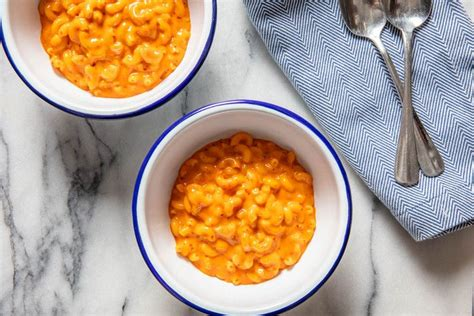

Nduja Mac and Cheese

Nduja Mac and Cheese
A simple, Mac and Cheese recipe that is enriched with spicy Calabrian nduja. Quick and easy comfor food
Ingredients
- 150g dried macaroni.
- Maldon sea flakes.
- 150ml evaporated milk.
- 150g of mature cheddar - grated.
- 50g of Nduja.
Method
- Add macaroni to a saucepan and cover with cold water. Add a pinch of salt and bring to a boil over a high heat.
- Cook for approximately 5 minutes, stirring frequently. Water should be almost absorbed and the pasta not quite al dente.
- Add evaporated milk, stir and bring back to the boil.
- Add grated cheese, stir to combine, then add nduja. Continue to stir until combined.
- Reduce heat to low, stirring continuously, until liquid has reduced to a creamy sauce. At this stage the cheese should have melted completely and the nduja should be fully emulsified.
- Adjust seasoning if required and serve immediately.